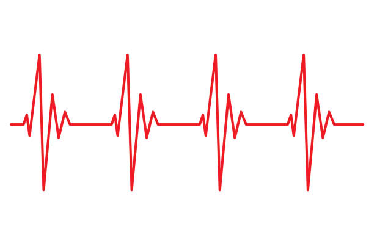

Data Science Portfolio
A sample of some recent data science projects
Abnormal Heartbeat Detection using Deep Learning

Image credit: https://www.istockphoto.com/photos/normal-heart-rhythm
Cardiovascular disease is a major cause of mortality, but early detection of disease can help doctors develop plans to reduce the risk of cardiovascular disease related death. Given that abnormal heartbeat signals are an indicator of cardiovascular disease, early detection of anomalies could help clinicians diagnose these diseases early on. Therefore, the aim of this project is to build a deep learning model that can detect abnormal heartbeat signals. This predictive model could act as an accomodating tool for doctors working with patients who may have underlying cardiovascular disease.
Link to Project on Github